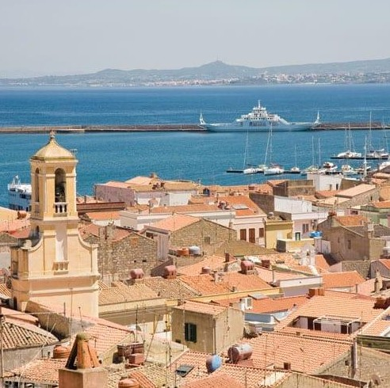
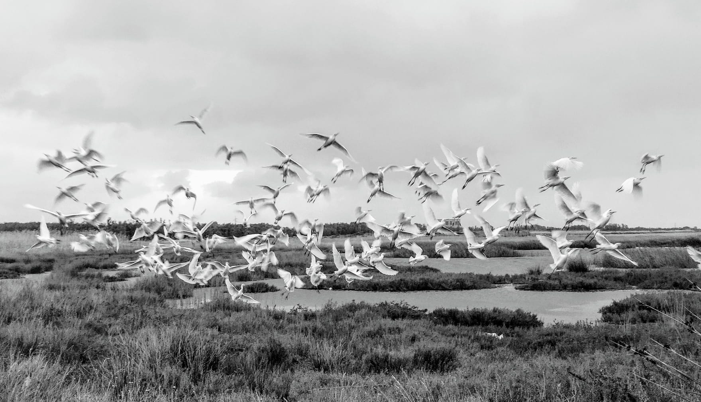

Da Portoscuso puoi partire alla scoperta di alcuni dei luoghi più spettacolari della Sardegna sud-occidentale: antiche miniere sul mare, panorami mozzafiato, spiagge selvagge e il famoso faraglione di Pan di Zucchero.
Porto Paglia è uno dei luoghi più suggestivi del Sulcis Iglesiente, famoso per la storica tonnara affacciata sul mare e per la sua spiaggia immersa nella natura. Qui il tempo sembra rallentare tra vento di maestrale, acqua cristallina e tramonti spettacolari sulla costa occidentale della Sardegna.
La vecchia tonnara racconta ancora oggi la tradizione della pesca del tonno, una delle attività storiche più importanti di questa parte della Sardegna.
Nebida è uno dei panorami più spettacolari della Sardegna. Le antiche laverie minerarie affacciate sul mare creano uno scenario unico, dove storia industriale e natura si incontrano in modo straordinario.
Dal Belvedere di Nebida si può ammirare il famoso faraglione di Pan di Zucchero, circondato dal blu intenso del mare del Sulcis.
Masua è una delle località marine più affascinanti del sud Sardegna. Famosa per le sue scogliere, le antiche miniere e il mare trasparente, offre panorami spettacolari e tramonti indimenticabili.
Da qui partono anche le escursioni in barca verso le grotte marine e il celebre Pan di Zucchero.
Con i suoi 133 metri di altezza, Pan di Zucchero è il faraglione più alto del Mediterraneo e uno dei simboli più iconici della Sardegna.
Questa imponente formazione rocciosa emerge dal mare davanti alla costa di Masua, regalando uno scenario spettacolare soprattutto al tramonto.
Le escursioni in barca permettono di attraversare archi naturali, grotte marine e acque dai colori incredibili.
Esiste una Sardegna lontana dalle rotte del turismo di massa. Una Sardegna fatta di silenzio, vento, mare selvaggio e antichi sentieri minerari sospesi tra montagne e Mediterraneo.
Il Cammino Minerario di Santa Barbara è considerato uno dei percorsi trekking più affascinanti d’Europa, un viaggio unico che attraversa il cuore autentico del Sulcis Iglesiente, nel sud-ovest della Sardegna.
Oltre 500 chilometri tra miniere abbandonate, villaggi storici, falesie sul mare, spiagge selvagge, montagne e borghi autentici, in un territorio dove la natura domina ancora incontrastata.
Il Cammino Minerario unisce trekking, mare, archeologia industriale, spiritualità e tradizioni locali in un’esperienza considerata tra le più emozionanti d’Italia.
Per oltre un secolo il Sulcis Iglesiente è stato uno dei più importanti distretti minerari d’Europa. Da queste montagne venivano estratti carbone, piombo e zinco, materiali che hanno segnato profondamente la storia economica della Sardegna.
Interi paesi nacquero attorno alle miniere. Migliaia di minatori percorrevano ogni giorno questi sentieri tra montagne, gallerie e coste selvagge affacciate sul mare.
Oggi quelle antiche vie sono diventate un percorso straordinario, capace di raccontare la memoria del lavoro minerario e la bellezza incontaminata della Sardegna sud-occidentale.
Camminare qui significa attraversare una Sardegna autentica, dove il vento del maestrale, il silenzio della natura e il rumore del mare accompagnano ogni passo.
Iglesias rappresenta il cuore storico del Cammino Minerario. Antica città medievale, custodisce ancora oggi il fascino del passato minerario della Sardegna.
Passeggiando tra le sue strade si incontrano vecchi edifici minerari, piazze storiche, chiese e testimonianze della vita dei minatori.
Da qui iniziano alcune delle tappe più spettacolari del percorso, tra montagne e sentieri immersi nella macchia mediterranea.
Nebida è uno dei luoghi più spettacolari della Sardegna. Le antiche laverie minerarie sembrano sospese sulle scogliere a picco sul mare.
Qui il panorama cambia improvvisamente: il blu intenso del Mediterraneo incontra le montagne minerarie del Sulcis, creando uno scenario unico al mondo.
Dal celebre Belvedere di Nebida si può ammirare Pan di Zucchero, il gigantesco faraglione simbolo della costa sud-occidentale della Sardegna.
I tramonti qui sono considerati tra i più belli del Mediterraneo.
Masua è una delle località marine più suggestive del Sulcis Iglesiente. Il mare cristallino, le antiche miniere sul mare e le alte falesie creano un paesaggio straordinario.
Qui il Cammino Minerario incontra il Mediterraneo in tutta la sua bellezza: sentieri panoramici, grotte marine, calette nascoste e il rumore costante delle onde sulle rocce.
Le escursioni in barca permettono di raggiungere archi naturali e grotte spettacolari sotto Pan di Zucchero.
Con i suoi 133 metri di altezza, Pan di Zucchero è il faraglione più alto del Mediterraneo e uno dei simboli più iconici della Sardegna.
Questa gigantesca montagna calcarea emerge dal mare davanti alla costa di Masua, regalando uno scenario naturale spettacolare soprattutto nelle ore del tramonto.
La luce del sole colpisce la roccia creando colori straordinari tra oro, arancione e rosso intenso.
È uno dei luoghi più fotografati della Sardegna e una delle immagini simbolo del Sulcis Iglesiente.
Dopo giorni di trekking tra montagne e miniere, Portoscuso rappresenta una delle tappe più rilassanti del cammino.
Il borgo conserva ancora oggi l’anima autentica della Sardegna marinara: la Torre Spagnola domina il porto storico, le barche dei pescatori animano il lungomare e il mare cristallino accompagna ogni passeggiata.
Qui il Cammino Minerario incontra la tradizione delle tonnare, i tramonti sull’isola di San Pietro e il silenzio delle spiagge del Sulcis.
Sa Domu de Efisia è una soluzione ideale per chi percorre il cammino: camere accoglienti, relax dopo il trekking e posizione strategica vicino al mare e al centro storico.
Percorrere il Cammino Minerario di Santa Barbara significa scoprire una Sardegna autentica, lontana dal turismo di massa e ancora profondamente legata alla sua storia.
Tra miniere abbandonate, sentieri sul mare, borghi storici e tramonti sul Mediterraneo, ogni tappa regala panorami ed emozioni difficili da dimenticare.
Il silenzio della natura, il vento del maestrale e il profumo della macchia mediterranea accompagnano il cammino in uno dei territori più suggestivi della Sardegna sud-occidentale.
Portoscuso rappresenta una delle soste più affascinanti del percorso: un borgo marinaro autentico dove rilassarsi dopo il trekking, tra mare cristallino, tradizioni locali e panorami sull’isola di San Pietro.
Tra miniere sul mare, tramonti sul Mediterraneo e antichi borghi marinari, il Cammino Minerario di Santa Barbara regala un’esperienza autentica e difficile da dimenticare.

A soli 30 minuti di traghetto da Portoscuso si trova Carloforte, uno dei borghi più affascinanti della Sardegna.
Situato sull'Isola di San Pietro, Carloforte conserva ancora oggi le sue tradizioni tabarchine, i vicoli colorati, il porto pittoresco e un'atmosfera unica nel Mediterraneo.
Mare cristallino, scogliere spettacolari, spiagge incontaminate e tradizioni secolari rendono Carloforte una meta imperdibile durante una vacanza nel Sulcis.
Passeggiare tra le stradine del centro storico significa scoprire case colorate, piazzette caratteristiche, negozi artigianali e ristoranti dove gustare le specialità locali.
Le spiagge dell'Isola di San Pietro offrono acque limpide e paesaggi naturali tra i più suggestivi della Sardegna.
Capo Sandalo ospita il faro più occidentale d'Italia ed è uno dei punti migliori per ammirare il tramonto sul Mediterraneo.
Dal porto di Portoscuso partono ogni giorno traghetti diretti per Carloforte. La traversata dura circa 30 minuti e permette di raggiungere facilmente l'isola anche per una gita giornaliera.
Sa Domu de Efisia rappresenta una soluzione ideale per visitare Carloforte e l'Isola di San Pietro, grazie alla sua posizione strategica vicino al porto e agli imbarchi.
Potrai esplorare l'isola durante il giorno e rientrare a Portoscuso per goderti il relax, il mare e l'autentica ospitalità del Sulcis.

📸 Foto: Enrico Camboni
A pochi chilometri da Portoscuso si trova Sant'Antioco, una delle destinazioni più affascinanti del Sud Sardegna. Collegata alla terraferma da un istmo artificiale, questa splendida isola racchiude storia, natura, tradizioni e alcune delle spiagge più belle del Mediterraneo.
Visitare Sant'Antioco significa scoprire un territorio autentico dove il mare cristallino incontra una storia millenaria e paesaggi naturali che sorprendono in ogni stagione dell'anno.
Uno degli spettacoli naturali più suggestivi dell'isola è rappresentato dai fenicotteri rosa che popolano gli stagni e le aree umide di Sant'Antioco.
Questi eleganti uccelli, simbolo della Sardegna, possono essere osservati durante gran parte dell'anno mentre si muovono nelle acque basse alla ricerca di cibo. Nelle prime ore del mattino e soprattutto al tramonto il paesaggio assume colori straordinari e regala scenari unici agli amanti della fotografia e della natura.
Sant'Antioco non è soltanto mare e natura. La sua storia affonda le radici nell'antichità.
Qui sorse l'antica Sulky, una delle più importanti città fondate dai Fenici nel Mediterraneo occidentale e considerata uno dei più antichi insediamenti urbani della Sardegna.
Per secoli questo territorio fu un importante centro commerciale grazie alla sua posizione strategica lungo le rotte marittime del Mediterraneo. Ancora oggi è possibile visitare la necropoli punica, importanti aree archeologiche e monumenti che raccontano oltre duemila anni di storia.
Passeggiando per il centro storico si possono ammirare la Basilica di Sant'Antioco, il lungomare, il porto turistico e numerose testimonianze del passato che rendono l'isola una meta perfetta per chi ama cultura e archeologia.
🌊 Maladroxia
Considerata la spiaggia simbolo dell'isola, offre una lunga distesa di sabbia chiara e un mare turchese dai colori caraibici.
🏖️ Coaquaddus
Una splendida baia immersa nella macchia mediterranea, caratterizzata da sabbia dorata e acque trasparenti.
🐚 Cala Sapone
Famosa per le sue rocce modellate dal vento e per il mare incredibilmente limpido.
☀️ Turri
Una delle località più panoramiche dell'isola, con mare dai colori spettacolari.
🌅 Cala Lunga
Piccola e suggestiva, ideale per chi cerca tranquillità e natura incontaminata.
🪨 Capo Sperone
Il punto più meridionale dell'isola, celebre per i tramonti sul Mediterraneo.
Oltre alle spiagge, Sant'Antioco offre una natura straordinaria fatta di sentieri panoramici, scogliere, macchia mediterranea e punti di osservazione che permettono di ammirare il mare da prospettive uniche.
I tramonti sono tra i più belli del Sud Sardegna e trasformano il paesaggio in uno spettacolo di colori che rimane impresso nella memoria di ogni visitatore.
Uno dei grandi vantaggi di Sant'Antioco è la sua vicinanza a Portoscuso.
In circa venti minuti d'auto è possibile raggiungere l'isola e trascorrere una giornata tra mare, storia, archeologia e natura.
Sa Domu de Efisia rappresenta una base ideale per scoprire Sant'Antioco e tutto il Sulcis Iglesiente.
Dopo una giornata trascorsa tra fenicotteri rosa, spiagge da cartolina, testimonianze fenicie e panorami sul Mediterraneo, potrai rientrare a Portoscuso e rilassarti nel comfort di una struttura accogliente a pochi passi dal mare.